The Story
Everyone tells the Bezos API mandate story — “every team exposes data through APIs, no exceptions, anyone who doesn’t will be fired.” The untold part: the engineer who made it famous, Steve Yegge, did it by accident. He wrote an internal Google+ rant about platform strategy, embedded the Amazon anecdote for contrast, and accidentally published it publicly instead of internally. The post went viral. Bezos’s most influential management decision — which eventually led to AWS — became public through a copy-paste error. Conway’s Law says system architecture mirrors org structure. The Bezos mandate is the rare case where someone deliberately weaponized Conway’s Law.
Every successful system starts as a monolith, and for good reason. A monolith is a single deployable unit where all business logic, data access, and presentation live in one process. Early on, this is optimal: one codebase, one deployment, one database, simple debugging, easy local development.
The problems surface as the organization scales. Three forces conspire to make monoliths untenable:
- Deployment coupling. A one-line change in the payments module requires rebuilding, testing, and deploying the entire application. At Amazon circa 2001, deployments took hours and a single bug in an unrelated module could block the release of critical features. When 200 engineers share one deployable, merge conflicts and broken builds become the default state.
- Scaling granularity. The search feature needs 50x more compute than the admin dashboard, but in a monolith you scale the entire application uniformly. You cannot allocate resources where they matter most.
- Organizational bottlenecks. Conway’s Law states that systems mirror communication structures. A monolith forces cross-team coordination for every change. Teams cannot move independently. The friction grows quadratically with team size because every pair of developers is a potential coordination point.
The key insight is that microservices are fundamentally an organizational solution, not a technical one. They exist so that small, autonomous teams can own, deploy, and scale their services independently. The technical architecture follows the organizational need.
A microservices architecture decomposes an application into a collection of loosely coupled, independently deployable services, each owning a specific business capability and its data.
The critical properties:
| Property | What It Means |
|---|---|
| Independent deployability | Any service can be deployed without coordinating with others |
| Business domain alignment | Each service maps to a bounded context, not a technical layer |
| Data ownership | Each service owns its database; no shared databases |
| Autonomous teams | A single team owns the full lifecycle of a service |
| Decentralized governance | Teams choose their own tech stack, deployment cadence, storage |
Microservices are not “small services.” Size is irrelevant. What matters is that each service can be changed and deployed without requiring changes in other services.
1. Monolith to Microservices: The Migration Journey
1. When to Migrate
Migration should be driven by organizational pain, not architectural fashion. Strong signals:
- Deployment frequency has dropped because too many teams share the codebase
- A single team’s bug blocks all other teams from deploying
- You cannot scale specific features independently
- Onboarding new engineers takes weeks because the codebase is incomprehensible
- Feature velocity has plateaued despite hiring more engineers
If your team is small (fewer than 20-30 engineers) and deployment is smooth, a well-structured monolith is almost certainly the right choice.
2. The Strangler Fig Pattern
The proven approach to migration is the strangler fig pattern: incrementally replace pieces of the monolith by routing traffic to new services, while the monolith continues running. You never do a “big bang” rewrite.
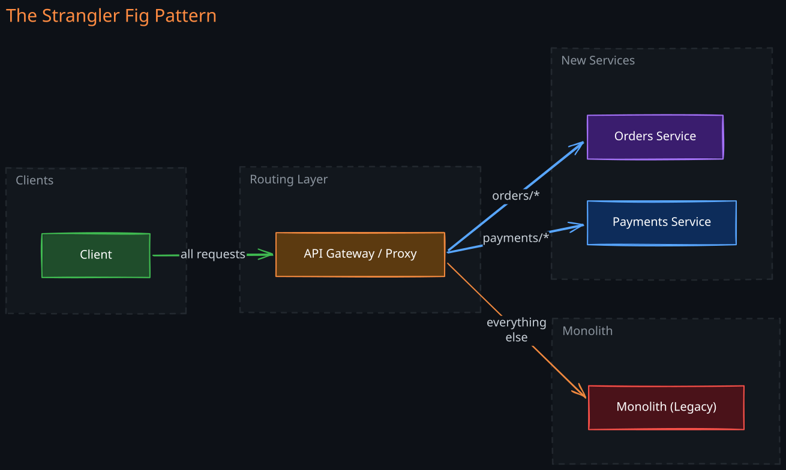
The API Gateway or reverse proxy acts as the strangler facade. It routes requests to new services for migrated functionality and to the monolith for everything else. Over months or years, the monolith shrinks until it can be decommissioned.
Steps in practice:
- Identify a seam — a business capability with clear boundaries and minimal coupling to the rest of the monolith
- Build the new service with its own database, replicating any data it needs
- Route traffic through the proxy to the new service
- Verify correctness by running both paths in parallel (shadow traffic or feature flags)
- Remove the old code from the monolith once the new service is stable
3. Decomposition Strategy: By Domain, Not by Layer
A common mistake is decomposing by technical layer (a “user interface service,” a “business logic service,” a “data access service”). This creates tightly coupled services that must change together — a distributed monolith.
The correct approach uses domain-driven design (DDD). Decompose by business domain: Orders, Payments, Inventory, User Profiles, Recommendations. Each service encapsulates an entire vertical slice of functionality for its domain.
2. Service Boundaries and Domain-Driven Design
Getting service boundaries right is the single most important decision in a microservices architecture. Bad boundaries are the leading cause of failure.
1. Bounded Contexts
A bounded context is a boundary within which a particular domain model is consistent and complete. The same real-world concept (e.g., “User”) can have different representations in different bounded contexts:
- In the Authentication context, a User has credentials, sessions, and MFA tokens
- In the Billing context, a User has a payment method, invoices, and subscription tier
- In the Social context, a User has a profile, connections, and activity feed
Each service models only what it needs. Trying to create a single unified “User” model shared across all services creates coupling and forces coordinated changes.
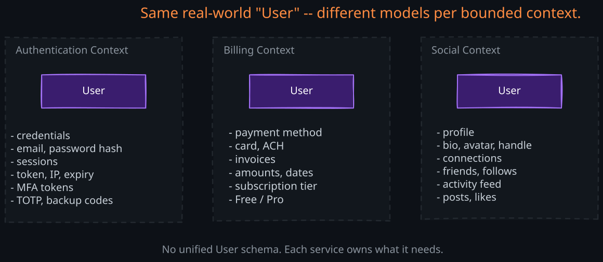
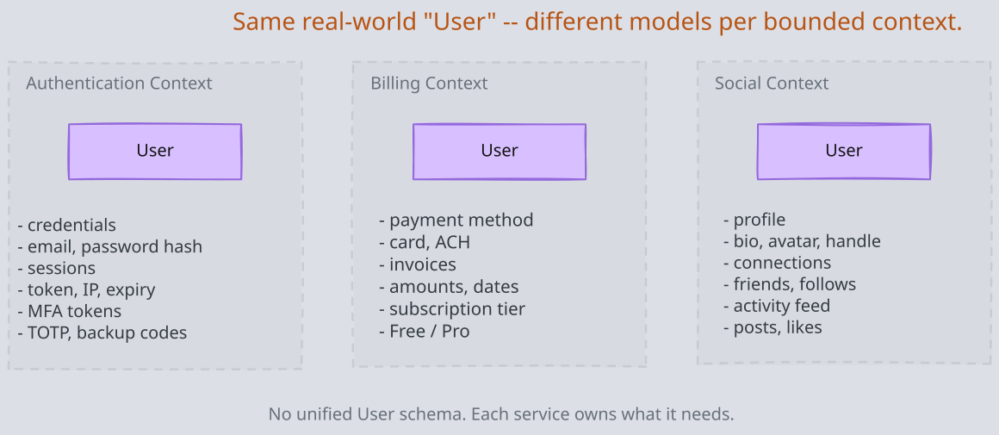
2. Anti-Corruption Layer
When two bounded contexts must communicate, an anti-corruption layer (ACL) translates between their models. The ACL prevents one service’s internal model from leaking into another. This is especially critical during migration: the ACL sits between the new service and the legacy monolith, translating between the old and new data models.
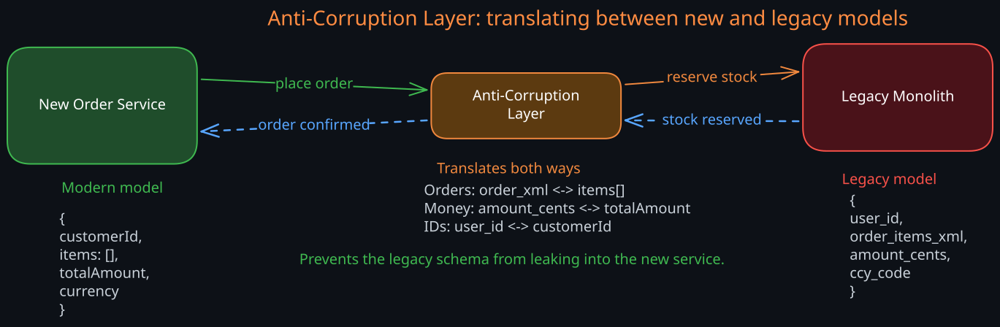
3. The Distributed Monolith Anti-Pattern
This is the most common failure mode. You end up with a distributed monolith when:
- Services share a database (any schema change requires coordinating multiple teams)
- Service boundaries cut across domains (changing a feature requires deploying 5 services simultaneously)
- Services make synchronous chains of calls to complete a single operation
- There is a “God service” that everything depends on
- You cannot deploy one service without deploying others
A distributed monolith gives you the operational complexity of microservices with none of the benefits. It is strictly worse than a well-structured monolith. The cure is to redraw boundaries along domain lines, eliminate shared databases, and replace synchronous chains with async communication.
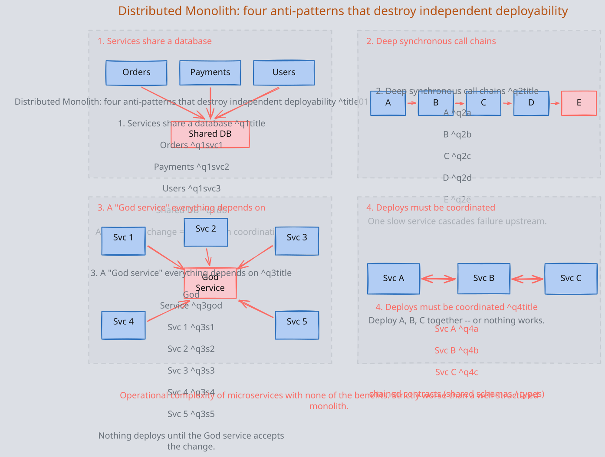
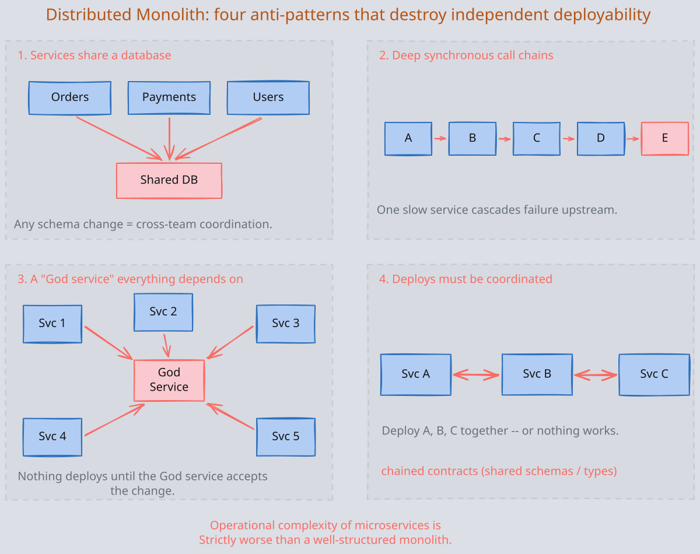
3. Communication Patterns
Services must communicate, and the choice between synchronous and asynchronous patterns has profound consequences for reliability, latency, and coupling.
1. Synchronous: REST and gRPC
In synchronous communication, the caller blocks until the callee responds.
REST over HTTP is the simplest and most widely adopted. It works well for request-response interactions where the caller needs the response to continue.
gRPC uses Protocol Buffers for serialization and HTTP/2 for transport. It offers strong typing, code generation, bidirectional streaming, and significantly lower serialization overhead than JSON. It is the standard for internal service-to-service communication at Google, Netflix, and most mature microservice architectures.
| Aspect | REST | gRPC |
|---|---|---|
| Serialization | JSON (text, ~5-10x larger) | Protobuf (binary, compact) |
| Contract | OpenAPI/Swagger (optional) | .proto files (required, strict) |
| Streaming | Not native | Bidirectional streaming built in |
| Browser support | Native | Requires gRPC-Web proxy |
| Best for | Public APIs, simple CRUD | Internal service-to-service, low-latency |
Failure modes of synchronous communication:
- Cascading failures. If Service C is slow, Service B (which calls C) backs up, which causes Service A (which calls B) to back up. One slow service can take down the entire system.
- Temporal coupling. Both services must be running simultaneously. If the downstream service is down, the request fails.
- Latency accumulation. Each hop adds latency. A request that traverses 5 services accumulates the latency of all 5.
2. Asynchronous: Events and Message Queues
In asynchronous communication, the sender publishes a message and does not wait for a response. This fundamentally changes the coupling characteristics.
Message queues (RabbitMQ, SQS) provide point-to-point delivery. One producer sends a message, one consumer processes it. Good for task distribution and work queues.
Event streaming (01-Kafka, Pulsar) provides publish-subscribe with durable, replayable logs. Multiple consumers can independently read the same events. This is the backbone of event-driven architectures.
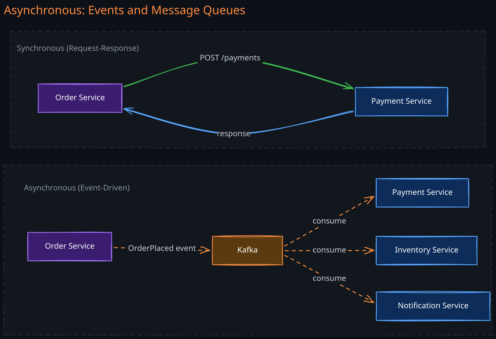
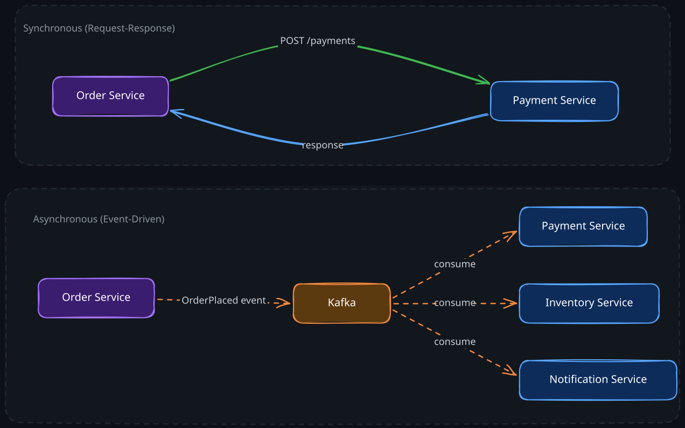
In the synchronous model, Order Service must wait for Payment Service and cannot proceed if it is down. In the asynchronous model, Order Service publishes an event and moves on. Payment, Inventory, and Notification services consume the event independently. If any consumer is temporarily down, the event waits in Kafka and is processed when the consumer recovers.
When to use which:
| Use Synchronous When | Use Asynchronous When |
|---|---|
| The caller needs an immediate response to continue | The operation can complete later |
| The operation is a query (read) | The operation is a command (write) that triggers side effects |
| Latency tolerance is very low | Multiple services need to react to the same event |
| The call graph is shallow (1-2 hops) | You need to decouple service availability |
See also: 01-Choreography-Orchestration for patterns of coordinating async workflows.
4. Data Management: The Hard Truth About Giving Up Joins
The database-per-service pattern is the defining constraint of microservices. Each service owns its database, and no other service can access it directly. This is non-negotiable for independent deployability — if services share a database, schema changes require cross-team coordination, and you are back to a monolith.
But this creates hard problems. In a monolith, you can JOIN across tables in a single SQL query. In microservices, the data is split across independent databases. You have lost transactional consistency, and you must solve distributed data problems that simply did not exist before.
1. Cross-Service Queries
When a service needs data owned by another service, it has three options:
- API call at query time — call the other service synchronously. Simple but creates runtime coupling and adds latency.
- Data replication via events — subscribe to events from the other service and maintain a local read-optimized copy. More complex but removes runtime coupling.
- CQRS (Command Query Responsibility Segregation) — maintain a separate read model that aggregates data from multiple services via event streams. The write side and read side use different data stores optimized for their access patterns.
CQRS is powerful for systems where read and write patterns diverge significantly. The write side uses a normalized relational database for transactional integrity. The read side uses a denormalized store (like 01-Elasticsearch or a materialized view) optimized for specific query patterns. Events bridge the two sides, introducing eventual consistency.
2. Distributed Transactions: The Saga Pattern
When a business operation spans multiple services (e.g., “place an order” requires reserving inventory, charging payment, and creating a shipping request), you cannot use a traditional ACID transaction because the data lives in different databases.
The saga pattern breaks a distributed transaction into a sequence of local transactions, each in one service. If any step fails, compensating transactions undo the previous steps.
There are two coordination approaches:
- Choreography — each service listens for events and decides what to do next. No central coordinator. Simple for 2-3 step flows, but becomes tangled and hard to reason about as the number of steps grows.
- Orchestration — a central orchestrator service directs each step. Easier to understand and debug for complex flows, but creates a single point of coupling.
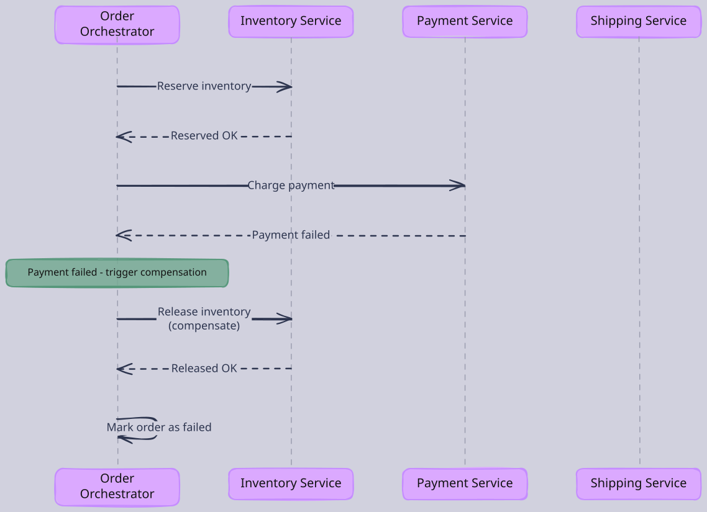
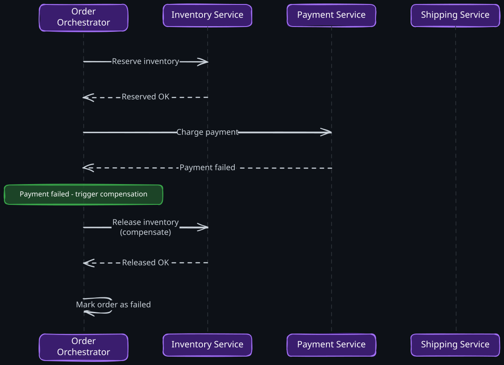
In this orchestrated saga, when Payment fails, the orchestrator triggers compensating actions to undo previous steps (releasing the reserved inventory). This is not the same as a rollback — the inventory was genuinely reserved and is now genuinely released. Both are visible state changes.
Critical considerations for sagas:
- Idempotency — every step and compensation must be idempotent because messages can be delivered more than once
- Timeout handling — what if a service never responds? The orchestrator needs timeout-based compensation
- Ordering — compensating actions must execute in reverse order
- Observability — you need to track the saga’s state to debug failures
See also: 05-Distributed-Transactions for deeper coverage of 2PC, 3PC, and consensus-based approaches.
3. Event Sourcing
Instead of storing only the current state, event sourcing stores every state change as an immutable event in an append-only log. The current state is derived by replaying events from the beginning (or from a snapshot).
This gives you a complete audit trail, the ability to reconstruct state at any point in time, and natural integration with event-driven architectures. But it adds complexity: event schema evolution is hard, replaying millions of events is slow without snapshots, and it requires a fundamental shift in how developers think about data.
Event sourcing pairs naturally with CQRS — events are the bridge between the write model (event store) and the read model (materialized projections).
5. Resilience Patterns
In a distributed system, partial failures are the norm. A microservices architecture must be designed to degrade gracefully, not fail catastrophically.
1. Circuit Breaker
A circuit breaker wraps calls to a downstream service and monitors failures. When failures exceed a threshold, the circuit “opens” and immediately returns a fallback response instead of making the call. After a timeout, it allows a few trial requests through (“half-open”) to see if the service has recovered.
This prevents a failing service from consuming resources in the caller and propagating failures upstream. Without circuit breakers, a single slow service can exhaust thread pools across the entire call chain.
Libraries: 15-Resilience4j, Hystrix (deprecated but architecturally influential).
2. Timeout and Retry with Exponential Backoff
Every outgoing call must have a timeout. Without one, a hung downstream service ties up the caller’s threads indefinitely. Retries handle transient failures, but must use exponential backoff with jitter to avoid thundering herd problems where all callers retry simultaneously.
The timeout cascade problem is subtle: if Service A gives Service B a 3-second timeout, and B calls C with a 3-second timeout, then B might timeout waiting for C at the exact moment A times out waiting for B. Set timeouts to decrease as you go deeper in the call chain, or use deadline propagation (passing the remaining time budget with each call).
3. Bulkhead
The 16-Bulkhead Pattern isolates failures by partitioning resources. If your service calls three downstream services, each gets its own thread pool. If one downstream service becomes slow and exhausts its thread pool, the other two are unaffected.
Named after ship bulkheads that contain flooding to one compartment rather than sinking the entire ship.
4. Rate Limiting and Load Shedding
Services protect themselves from being overwhelmed by rate limiting incoming requests. When at capacity, it is better to reject excess requests immediately (load shedding) than to accept them and become progressively slower for everyone.
6. Service Mesh and Observability
1. Service Mesh
A service mesh moves networking concerns (retries, timeouts, circuit breaking, mutual TLS, traffic shaping) out of application code and into infrastructure. A sidecar proxy (like Envoy) runs alongside each service instance and handles all inbound and outbound traffic.
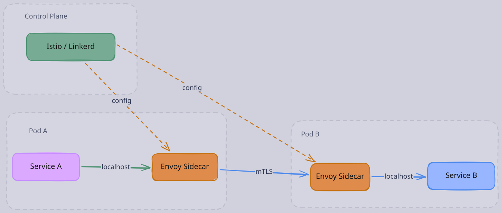
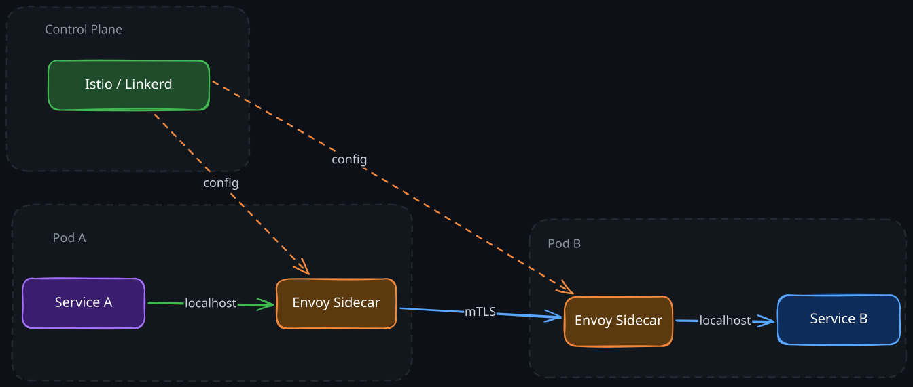
Service A sends requests to localhost (its Envoy sidecar), which handles mTLS, retries, circuit breaking, and load balancing before forwarding to Service B’s sidecar. The control plane (Istio, Linkerd) pushes configuration to all sidecars. Applications remain unaware of the mesh.
Tradeoffs: the mesh adds latency (typically 1-3ms per hop), operational complexity (another infrastructure component to manage), and resource overhead (one sidecar per service instance). It pays off when you have many services and need consistent cross-cutting behavior without modifying each service.
2. Observability: The Three Pillars
In a monolith, a stack trace tells you what happened. In microservices, a request traverses multiple services, and you need three signals to understand behavior:
- Distributed tracing (Jaeger, Zipkin, OpenTelemetry) traces a request across service boundaries by propagating a trace ID. Each service adds a span showing its processing time. This lets you see the full request path and identify which service is the bottleneck.
- Metrics (17-Prometheus, Datadog) provide aggregated measurements: request rate, error rate, latency percentiles (p50, p95, p99), saturation of resources. The RED method (Rate, Errors, Duration) and USE method (Utilization, Saturation, Errors) provide frameworks for what to measure.
- Structured logging (ELK stack, Splunk) provides event-level detail. Every log line includes the trace ID, enabling correlation across services.
Without all three, debugging production issues in a microservices architecture is nearly impossible.
See also: 01-Observability for deeper coverage of monitoring strategies.
7. Deployment and Operations
1. Service Discovery
Services need to find each other dynamically because instances come and go as they scale up, scale down, or recover from failures. Service discovery systems (12-Eureka, Consul, 02-Zookeeper, or DNS-based approaches in 05-Kubernetes) maintain a registry of available instances.
Two models:
- Client-side discovery — the client queries the registry and load-balances across instances (14-Ribbon)
- Server-side discovery — a load balancer queries the registry; clients call the load balancer (Kubernetes Services work this way)
2. API Gateway
An API Gateway is the single entry point for external clients. It handles authentication, rate limiting, request routing, protocol translation, and response aggregation. It prevents external clients from needing to know about internal service topology.
The Backend for Frontend (BFF) pattern extends this: each frontend (web, iOS, Android) gets its own gateway that tailors API responses to that client’s needs, reducing over-fetching and enabling independent frontend evolution.
3. Container Orchestration
05-Kubernetes has become the standard platform for deploying microservices. It provides:
- Service discovery and load balancing via DNS and kube-proxy
- Self-healing by restarting failed containers
- Horizontal autoscaling based on CPU, memory, or custom metrics
- Rolling deployments with configurable rollout strategies
- Configuration management via ConfigMaps and Secrets
4. Deployment Strategies
- Blue-green — run two identical environments; switch traffic from blue (current) to green (new) instantly. Fast rollback by switching back.
- Canary — route a small percentage of traffic (1-5%) to the new version. Monitor error rates and latency. Gradually increase if healthy. Catches bugs that only appear under real traffic patterns.
- Feature flags — deploy code changes behind flags that can be toggled without redeployment. Decouple deployment from release.
8. Testing in Microservices
Testing becomes significantly harder when the system is distributed across many independently deployed services.
1. The Testing Pyramid
The traditional testing pyramid still applies, but with additional layers:
- Unit tests — fast, isolated, test business logic within a service
- Integration tests — test a service with its real database and dependencies (using containers via Testcontainers)
- Contract tests — verify that service interfaces match what consumers expect. Pact or Spring Cloud Contract let the consumer define the contract, and the provider runs tests against it. This catches breaking API changes before deployment.
- End-to-end tests — test the full system. These are slow, flaky, and expensive. Minimize them.
2. Chaos Engineering
In a distributed system, failures are guaranteed. Chaos engineering proactively injects failures (killing instances, adding network latency, partitioning services) in production or staging to verify that resilience mechanisms work. Netflix’s Chaos Monkey randomly terminates production instances. This practice forces teams to build resilience rather than assuming it.
9. Real-World Lessons
1. Amazon: The Two-Pizza Team Mandate
In 2002, Jeff Bezos mandated that all teams communicate through service interfaces and that no team should be larger than what two pizzas could feed. This forced decomposition by business domain and independent deployability. The result was AWS — Amazon’s internal infrastructure became a product.
Key lesson: microservices succeed when organizational structure and architecture are aligned.
2. Netflix: Pioneering Resilience at Scale
Netflix migrated from a monolithic Java application to microservices between 2008-2015 after a catastrophic database corruption took the site down for three days. They built the Netflix OSS stack: 12-Eureka for discovery, Hystrix for circuit breaking, 14-Ribbon for client-side load balancing, Zuul for API gateway.
Key lesson: resilience patterns (circuit breakers, bulkheads, timeouts) are not optional — they are essential infrastructure. Netflix also learned that organizational culture matters as much as technology: they gave teams full ownership including on-call responsibility.
3. Uber: The Cost of Getting Boundaries Wrong
Uber initially decomposed into very fine-grained microservices (over 2,000), leading to unmanageable complexity: tangled dependencies, cascading failures, and enormous cognitive overhead. They later introduced the concept of “domain-oriented microservice architecture” (DOMA), grouping related services into larger domain clusters with clear interfaces between clusters.
Key lesson: too many fine-grained services are as harmful as a monolith. The sweet spot is domain-aligned services with clear bounded contexts.
10. When NOT to Use Microservices
Microservices are not universally better than monoliths. They are worse in many situations:
- Small teams (fewer than 20-30 engineers) — the operational overhead of microservices exceeds the organizational benefit. A well-structured modular monolith serves you better.
- Early-stage products — when you are still discovering the domain, drawing service boundaries is premature. You will draw them wrong, and restructuring distributed services is much harder than refactoring a monolith.
- Low-latency requirements — every network hop adds latency. If your use case demands single-digit millisecond responses, a monolith with in-process calls will outperform a chain of service calls.
- Immature DevOps practices — microservices require sophisticated CI/CD pipelines, container orchestration, observability, and on-call culture. Without these, you are adding complexity you cannot manage.
- Strong transactional requirements — if your domain requires strict ACID transactions across multiple entities, distributed sagas add enormous complexity compared to a single database transaction.
Martin Fowler’s first law of microservices: “Don’t start with microservices.” Build a monolith first, find the pain points, and extract services where the organizational and scaling benefits justify the complexity.
Revision Summary
- Microservices solve organizational scaling problems, not technical ones. They enable independent teams to deploy independently.
- Decompose by business domain (bounded contexts), never by technical layer. Bad boundaries create distributed monoliths.
- The strangler fig pattern enables incremental migration from a monolith without risky big-bang rewrites.
- Synchronous communication (REST, gRPC) is simpler but creates temporal coupling and cascading failure risk. Asynchronous communication (01-Kafka, message queues) decouples services but introduces eventual consistency.
- Database-per-service is mandatory for independent deployability. You lose joins and ACID transactions across services. The saga pattern replaces distributed transactions with sequences of local transactions and compensations.
- CQRS separates read and write models, optimizing each independently. Event sourcing stores all state changes as immutable events.
- Resilience patterns are essential: circuit breakers prevent cascading failures, bulkheads isolate resource pools, timeouts with exponential backoff prevent resource exhaustion.
- A service mesh (Envoy, Istio) moves networking concerns into infrastructure sidecars, providing consistent cross-cutting behavior.
- Observability requires all three pillars: distributed tracing, metrics, and structured logging with correlated trace IDs.
- Contract testing catches interface breaking changes between services without expensive end-to-end tests.
- Microservices are not appropriate for small teams, early-stage products, or domains requiring strict multi-entity ACID transactions.
Deep Understanding Questions
-
Distributed monolith diagnosis. Your organization has 30 microservices, but teams report they cannot deploy independently — every release requires coordinating 4-5 teams. What are the most likely root causes, and how would you systematically fix this without reverting to a monolith? Ans:
-
Saga failure edge cases. In an orchestrated saga for order placement (reserve inventory, charge payment, create shipment), the payment succeeds but the orchestrator crashes before recording the result. When it restarts, it has no record of the payment. How do you prevent double-charging? What if the compensating action (refund) also fails? Ans:
-
Cascading timeout analysis. Service A calls B (timeout 5s), B calls C (timeout 5s), C calls D (timeout 5s). Under what conditions can A’s total response time exceed 5 seconds? How would you redesign the timeout strategy? Ans:
-
Event ordering guarantees. Your order service publishes OrderPlaced and OrderCancelled events to Kafka. The inventory service consumes these events. Under what conditions could the inventory service process OrderCancelled before OrderPlaced? What would happen, and how do you prevent it? Ans:
-
Service boundary mistake. Your team split a monolith into a “User Service” and a “Notification Preferences Service.” Every API call to User Service now requires a follow-up call to Notification Preferences Service. Was this the right boundary? What would you do differently? Ans:
-
Database-per-service reporting challenge. Product management needs a dashboard showing orders joined with customer information joined with inventory levels. Each lives in a different service’s database. Evaluate three approaches to solve this and their tradeoffs. Ans:
-
Circuit breaker tuning. Your circuit breaker opens after 50% of requests fail in a 10-second window. During a deploy, a service briefly returns errors for 3 seconds. The circuit opens and stays open for 30 seconds, causing a much longer outage than the original 3-second blip. How would you tune the circuit breaker to avoid this amplification effect? Ans:
-
Event sourcing schema evolution. You have been using event sourcing for your order service for 2 years. A new business requirement changes the structure of the OrderPlaced event. You have 50 million historical events in the old format. How do you handle this migration? Ans:
-
Testing gap analysis. All your services have unit tests and integration tests with high coverage. Yet you still experience production outages from service interaction failures. What testing approach is missing, and how would you implement it? Ans:
-
Migration risk assessment. Your monolith handles 10,000 requests/second with p99 latency of 50ms. You plan to extract the most latency-sensitive path (search) into a microservice. The monolith previously made an in-process function call; now it will make a network call. What latency impact should you expect, and what mitigations can you apply? Ans:
-
Choreography vs orchestration tradeoff. You have a 7-step business workflow involving 5 services. The team initially used choreography (events), but debugging failures has become nearly impossible because there is no central view of the workflow state. What are the tradeoffs of switching to orchestration, and is there a hybrid approach? Ans:
-
Observability cost. Your distributed tracing system captures every request across 100 services. The tracing infrastructure now consumes 15% of your total compute budget. How would you reduce cost while maintaining the ability to debug production issues? Ans: